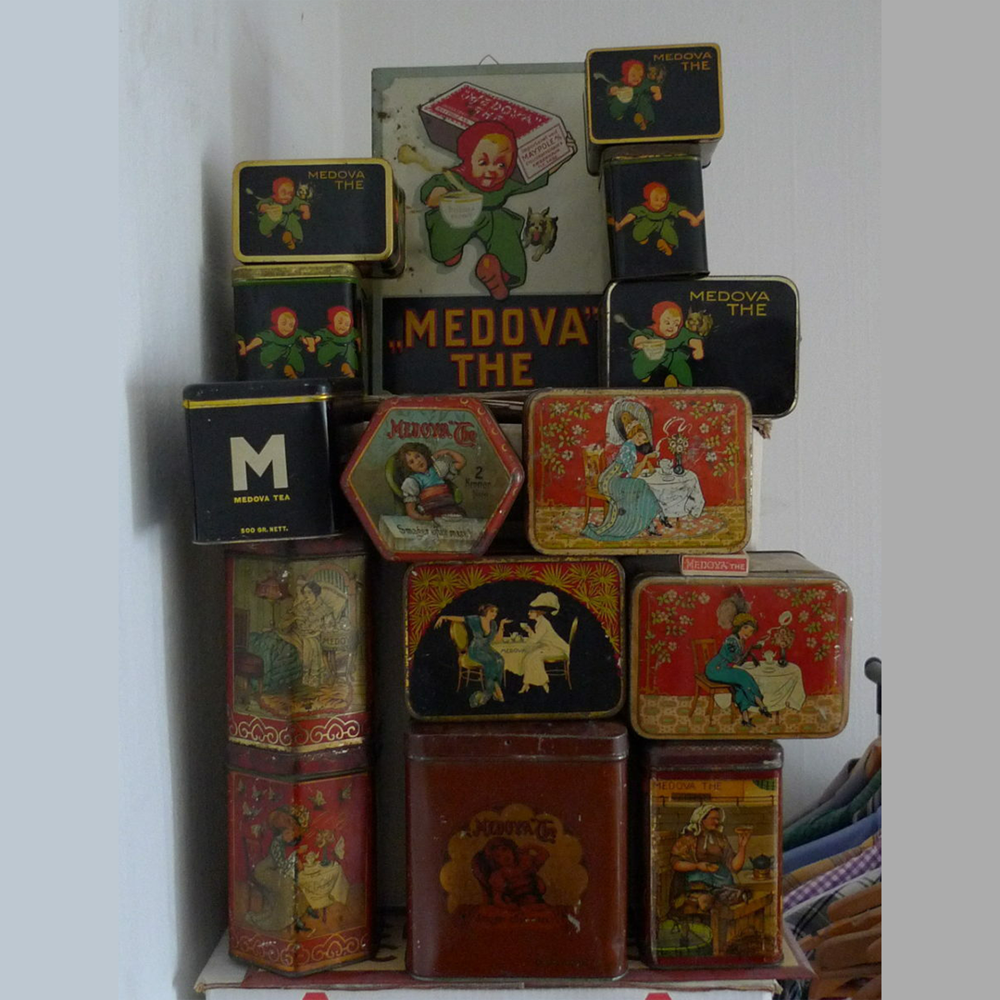
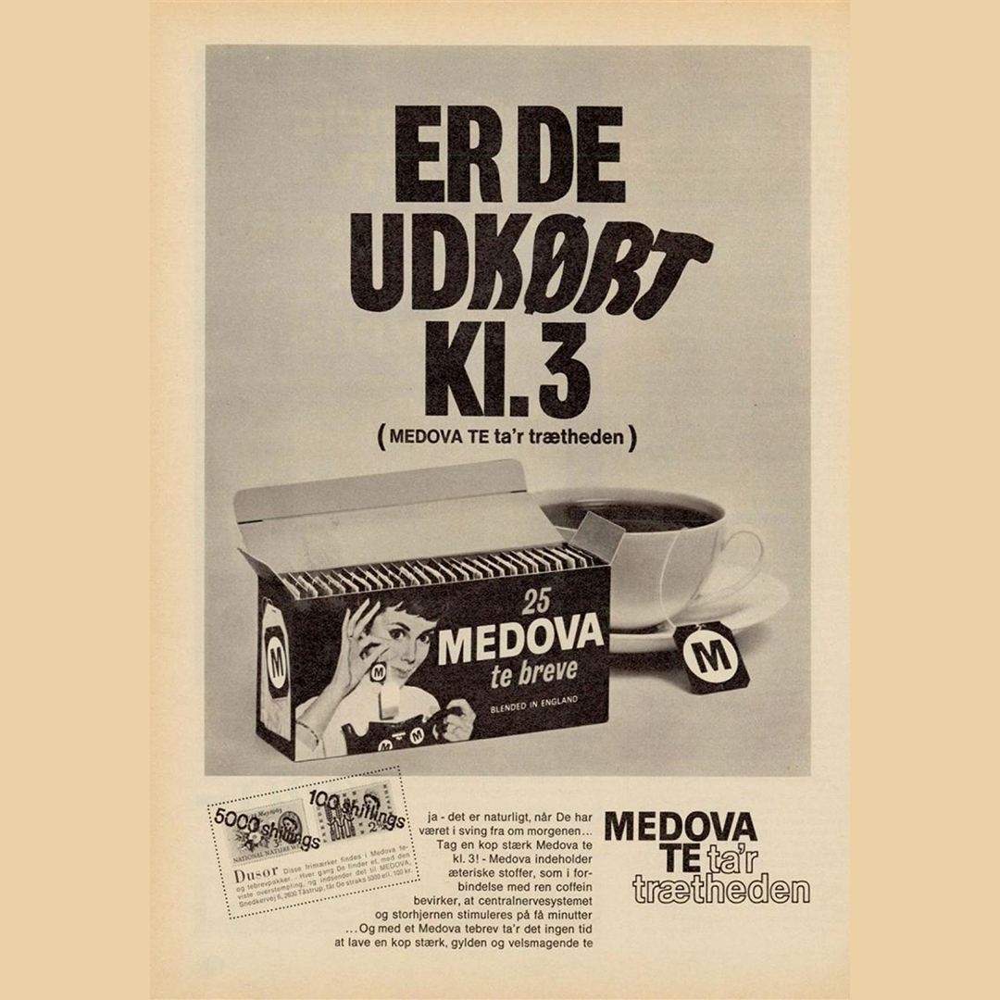
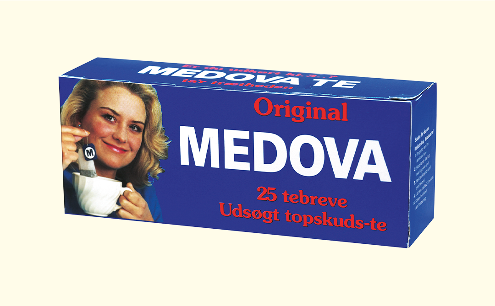
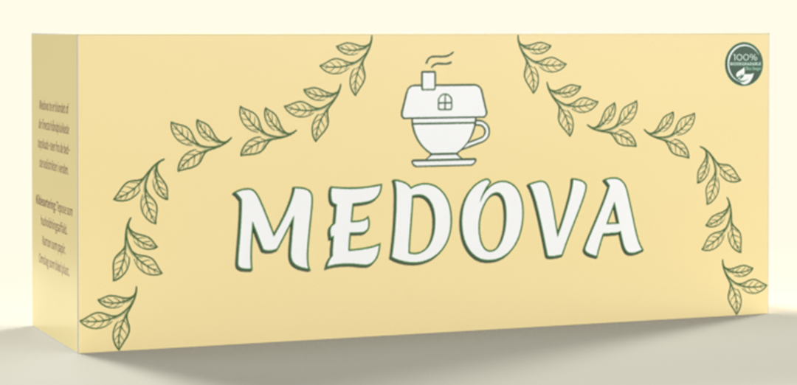

Medova er et klassisk, dansk te-brand, som har været fast inventar i samtlige danske hjem siden 1891.
Vi var et af de få, som overlevede besættelsesårene, og har siden oprindelsen altid kunne findes på supermarkedets hylder.

De gamle Medova-dåser fra start-1900-tallet, som ses her, er Medovas tidligste indpakning.
Disse dåser er i dag samlerobjekter, og kan, hvis man er heldig, findes i enkle antikvarebutikker i Danmark.

Fra omkring besættelsesårene, ses der her en avisreklame om Medova med det klassiske slogan:
"Er De udkørt kl. 3? Medova te ta'r trætheden."

De fleste af os kender Medovas indpakning, som den ses her.
Sådan har den nemlig set ud længe indtil nu.

Medovas nye indpakning er et udtryk for moderniseret og opgraderet ydre - klassisk og originalt indre.